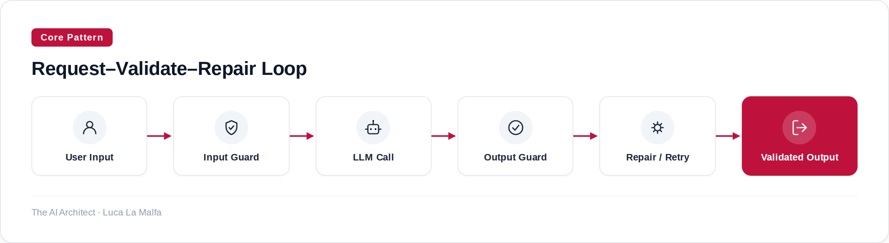

How to catch bad LLM output before it reaches your users, with concrete steps and real code.
October 1, 2026
Most LLM failures I see in production aren't hallucinations in the dramatic sense — they're structural: a field that should be an integer comes back as a string, a required key is missing, or the model decides to add an apology paragraph where you expected clean JSON. Guardrails and output validation exist to catch exactly these failures before they propagate downstream. The pattern is simple; the discipline of actually applying it consistently is not.

Rules I Follow Before Writing a Single Guard
Define the contract first
Write the schema or the set of constraints your output must satisfy before you write any prompt. If you can't define it, you can't validate it.
Validate both ends
Input guards catch prompt injection, PII leakage, and off-topic requests. Output guards catch structural violations and policy breaches. Skipping either end leaves a gap.
Fail loudly in staging, fail gracefully in production
During development, raise hard exceptions so failures are visible. In production, fall back to a safe default or trigger a retry — don't silently pass bad output.
Cap your retries
The repair-and-retry loop is useful but expensive. Two retries maximum; after that, return an error state rather than burning tokens indefinitely.
Log every validation failure
A validation failure is a signal — either the model is drifting, the prompt is ambiguous, or the schema is wrong. You need that data.
guardrails-ai/guardrails — Input/output guards to detect and mitigate LLM risks, and enforce structure.
When the Guard Fails: What to Check
Schema too strict for the task
If the model fails validation repeatedly even with a good prompt, your schema may be imposing constraints the task can't reliably satisfy. Loosen or split the output.
Prompt and schema are misaligned
The prompt asks for a narrative; the schema expects structured fields. Align them — tell the model explicitly what shape the output must take.
Model version changed under you
A model update can shift output formatting enough to break existing guards. Pin model versions in production and run validation tests on any upgrade.
Retry budget exhausted legitimately
If two retries consistently fail, the problem isn't the model — it's the contract. Revisit the schema before increasing the retry cap.
Inspired by [AINews] Gemini 4 Argon: GDM’s answer to Astra/Fable, with 1M output (Latent Space)